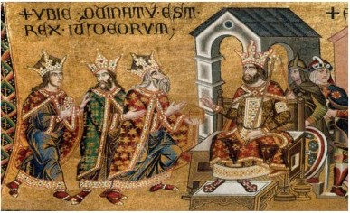

0063 The Roman general Pompey conquers this last nominally independent kingdom of Judea.
0048 Pompey is defeated by Julius Caesar in 48, and Antipater of Edom becomes the first Roman Procurator.
0045 Jews refuse to assimilate. Jewish law tries to separate Jews from gentiles to prevent Jews from adopting idolatrous behaviors. In Jewish law, a gentile is grouped together with dishonest butchers, gamblers, usurers and thieves who cannot act as witnesses; and charity from non-Jews is not to be accepted. Dietary laws also limit social interactions; e.g., food cooked by non-Jews is prohibited; hence, Shakespeare’s Shylock: “I will not eat with you.”
0044 Caesar is assassinated and Quintus Labienus, Roman general and ambassador to the Parthians (Persians), sides with the Liberators (Caesar’s assassins), and assists the Parthians in invading Roman territories.
0040 Parthians overrun Syria and Palestine and empower Antigonus. Herod (son of Antipater) goes to Rome, befriends Marc Antony, and is declared King of the Jews by the Roman Senate.
0037 Herod the Great expels the Parthians, retakes Judea, eliminates the Hasmoneans, and installs a Babylonian as High Priest. Alexandra, the mother of his Hasmonean wife Mariomne, is upset, so she contacts Cleopatra VII to have Marc Antony appoint her son, Aristobulus III, as High Priest. He is appointed, and is enthusiastically supported by the people, but Herod feels threatened, and so kills Aristobulus.
0031 The Battle of Actium. Octavian defeats Marc Antony and Cleopatra VII; Herod meets with Octavian, convinces Octavian to keep him as king, and executes a brutal repression. He kills his beloved wife Meriomne, her mother Alexandra, and Meriomne’s Hasmonean sons. This, or the example of Alexander Jannaeus, is likely the inspiration for the tale of the Holy Innocents. Herod further fills Jerusalem with Hellenistic architecture, expands the Temple, and brings in diaspora priests.

Herod greets the Three Kings